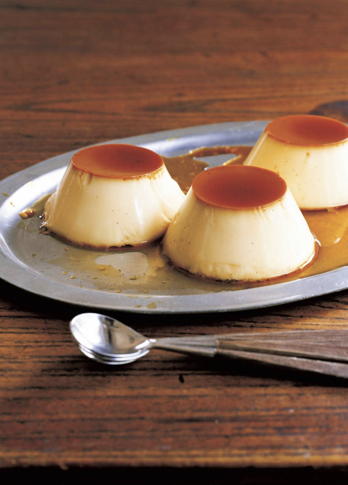

Cindry's Flan

Description
This dessert was introduced in volume 46, chapter 446 and is surprisingly sweet considering it was made by zombies. At this time the crew was making their way through Gecko Moria's huge, halloween-like pirate ship. Here they met a lot of interesting characters, one of them being Dr. Hogback, a mad scientist who was creating an army of zombies for Gecko Moria. This was quite a scary adventure for the crew, but at least some of them got to eat some flan.
Ingredients
- 3 eggs
- 6 tbsp. sugar
- 1 2/3 cups (390 mL) of milk
- 1/3 vanilla bean
- 3 tbsp. sugar
- 2 tbsp. water
Steps
- Make a caramel sauce by placing the sugar and 1 tbsp of water in a pan and heat on medium. Shake the pan until it becomes caramel colored, then add the remaining tbsp of water. Pour into the bottom of pudding cups and chill in the refrigerator.
- Use a knife to work open the vanilla bean pod and extract the seeds. Put the milk and vanilla seeds into a small pot and heat until it reaches 120 F (50 C).
- Crack eggs into a owl and whisk, then mix in sugar. Pour Pour in, mix, then use a sieve to filter.
- When the caramel is firm, pour in egg mixture. Use a spoon to scoop out bubbles, then cover with aluminum foil.
- Place containers into a heated steam cooker and insert cooking chopsticks or another wedge to keep lid ajar. Steam on low heat for 15-20 minutes. Test with a toothpick. If firm, allow to cool a bit before chilling in the refrigerator.